🛡️ Golden Spray Lab
Escenario
Como analista de ciberseguridad en SecureTech Industries, se le ha alertado de intentos inusuales de inicio de sesión y acceso no autorizado dentro de la red de la compañía. Los indicadores iniciales sugieren un posible ataque de fuerza bruta en las cuentas de usuario. Su misión es analizar los datos de registro proporcionados para rastrear la progresión del ataque, determinar el alcance de la brecha y los TTP del atacante.
Preguntas
¿Cuál es la dirección IP del atacante?
Se empezó la investigación buscando intentos de inicio de sesión fallidos mediante el filtro: index=goldenspray event.action=Logon event.code=4625. A partir de estos eventos se identificaron múltiples intentos de autenticación fallidos provenientes de la dirección IP 77.91.78.115, la cual corresponde al atacante.
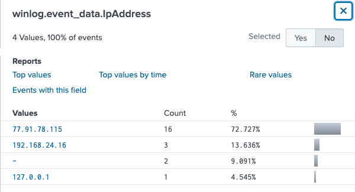
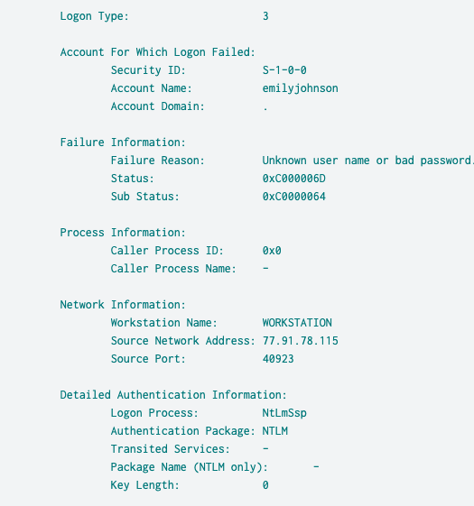
¿De qué país se origina el ataque?
Realizando la búsqueda en IPGeolocation, se identificó que la dirección IP 77.91.78.115 se encuentra geolocalizada en Finlandia, por lo que se concluye que el ataque se origina desde ese país.
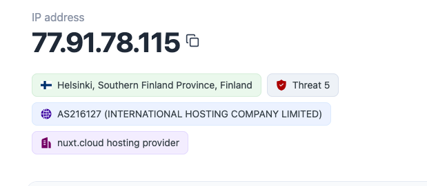
¿Cuál es el nombre de usuario de la cuenta comprometida utilizado para el acceso inicial?
Filtrando el evento de inicio de sesión exitoso y la dirección IP del atacante con el filtro index=goldenspray event.code=4624 winlog.event_data.IpAddress="77.91.78.115", se identificó que la cuenta comprometida utilizada para el acceso inicial corresponde al usuario mwilliams
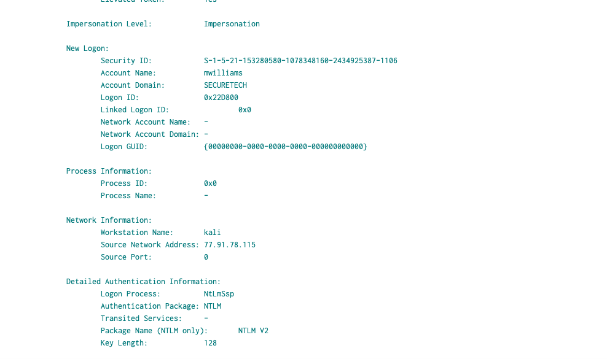
¿Cómo se llama el archivo malicioso utilizado por el atacante para la persistencia ST-WIN02?
Relacionando el Event ID 11 de Sysmon (File Create) con el usuario comprometido, se utilizó el filtro index=goldenspray event.code=11 winlog.computer_name="ST-WIN02.SECURETECH.local" .exe winlog.event_data.User="SECURETECH\\mwilliams". Con este filtro se identificó la creación del archivo OfficeUpdater.exe en la ruta C:\Windows\Temp\OfficeUpdater.exe, el cual está relacionado con el archivo malicioso.
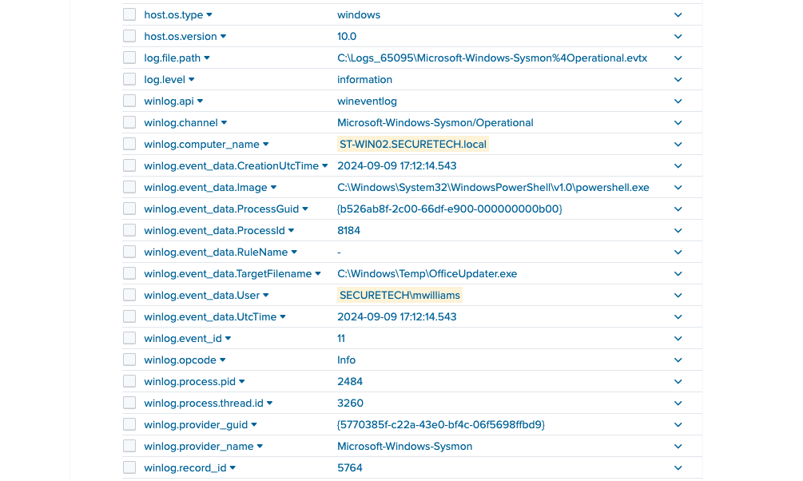
¿Cuál es la ruta completa utilizada por el atacante para almacenar sus herramientas?
Tomando como referencia el filtro anterior, se continuó la investigación para identificar la ruta donde el atacante almacenó sus herramientas. En los eventos de Sysmon y en el formato JSON se observó que los archivos fueron creados en la ruta C:\Users\Public\Backup_Tools\, la cual fue utilizada por el atacante para guardar sus herramientas.
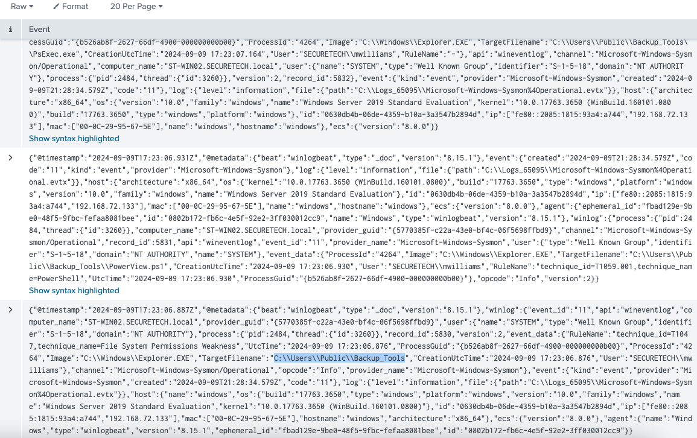
¿Cuál es el ID de proceso de la herramienta responsable de descargar las credenciales en ST-WIN02?
Para responder esta pregunta se relacionó el Event ID 1 de Sysmon,con el usuario comprometido. En los eventos se identificó la ejecución de la herramienta mimikatz.exe, utilizada para obtener credenciales, y se observó que el ID del proceso corresponde a 3708.
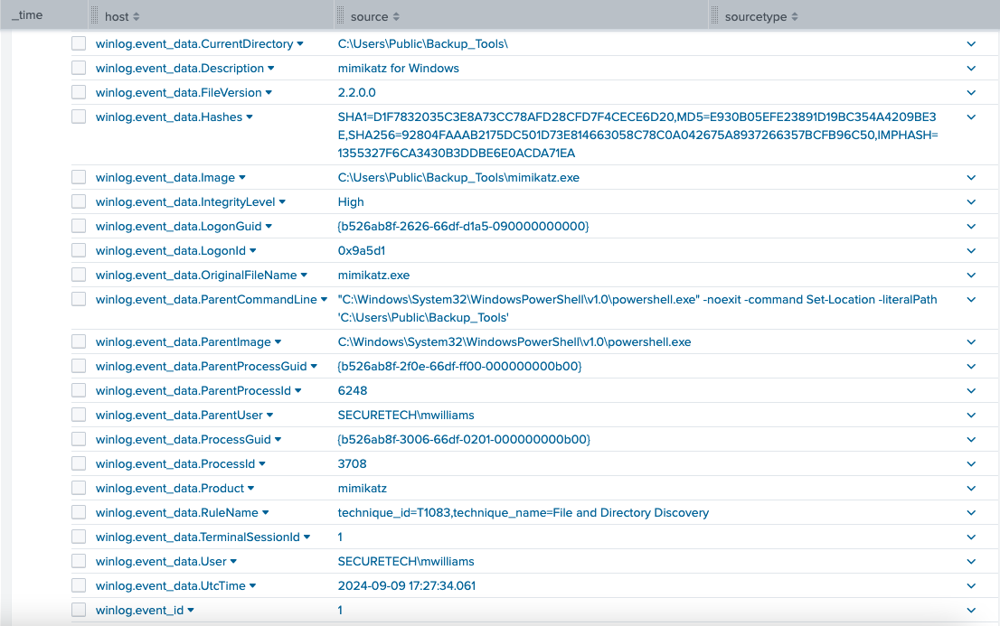
¿Cuál es el nombre de usuario de la segunda cuenta que el atacante comprometió y utilizó para el movimiento lateral?
Nuevamente se utilizó el filtro del evento de inicio de sesión exitoso, junto con la dirección IP del atacante. A partir de estos eventos se identificó que la segunda cuenta comprometida utilizada para el movimiento lateral corresponde al usuario jsmith.
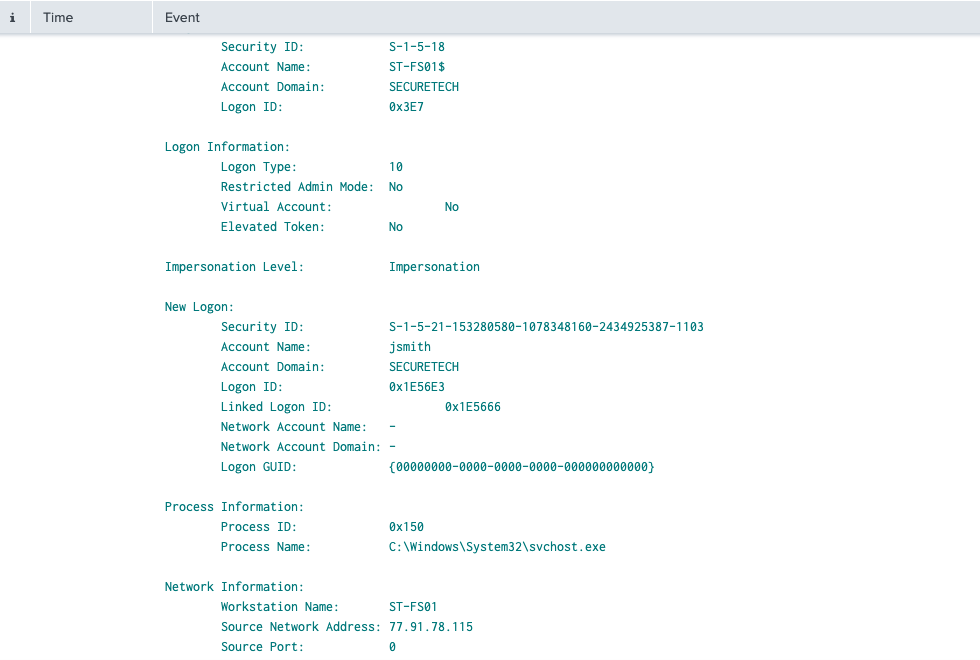
¿Puede proporcionar la tarea programada creada por el atacante para la persistencia en el controlador de dominio?
Para este caso se utilizó el Event ID 106 del Programador de tareas de Windows, el cual indica el registro de una tarea programada. Al revisar los eventos se identificó una tarea llamada FilesCheck, la cual resulta inusual y no corresponde a una tarea estándar de Windows, por lo que se concluye que fue utilizada por el atacante para mantener la persistencia en el controlador de dominio.
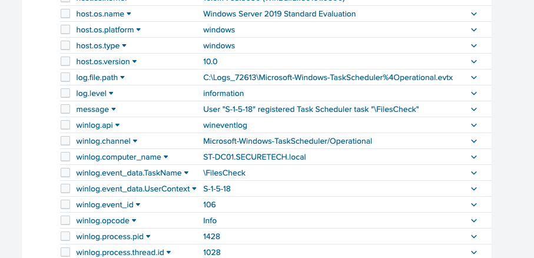
¿Qué tipo de cifrado se utiliza para los tickets de Kerberos en el entorno?
Para este caso se relacionó el Event ID 4769, correspondiente a las solicitudes de tickets de servicio de Kerberos. En el evento se identificó el campo TicketEncryptionType con el valor 0x17. Debido a que el evento solo muestra este valor hexadecimal, se realizó una búsqueda para identificar el algoritmo de cifrado utilizado, determinando que corresponde a RC4-HMAC, el cual es el tipo de cifrado usado por los tickets de Kerberos en este entorno.
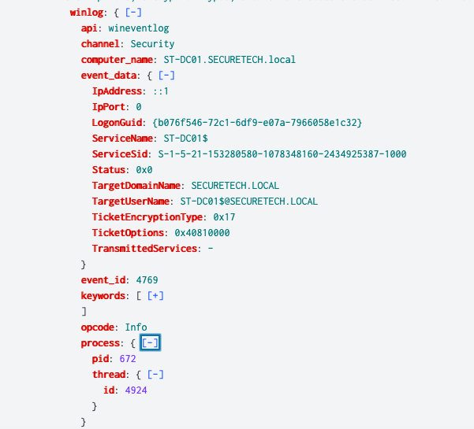
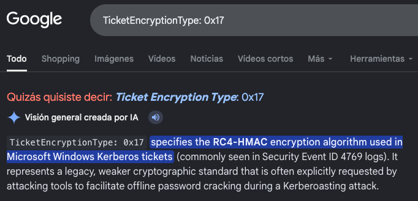
¿Puede proporcionar la ruta completa del archivo de salida en preparación para la exfiltración de datos?
Los atacantes suelen comprimir la información en archivos .zip antes de exfiltrarla. Por ello, se utilizó el filtro index=goldenspray event.code=11 winlog.event_data.TargetFilename="*zip*". La búsqueda devolvió dos eventos: uno relacionado con las herramientas del atacante y otro con el archivo C:\Users\Public\Documents\Archive_8673812.zip, el cual corresponde al archivo preparado para la exfiltración de datos
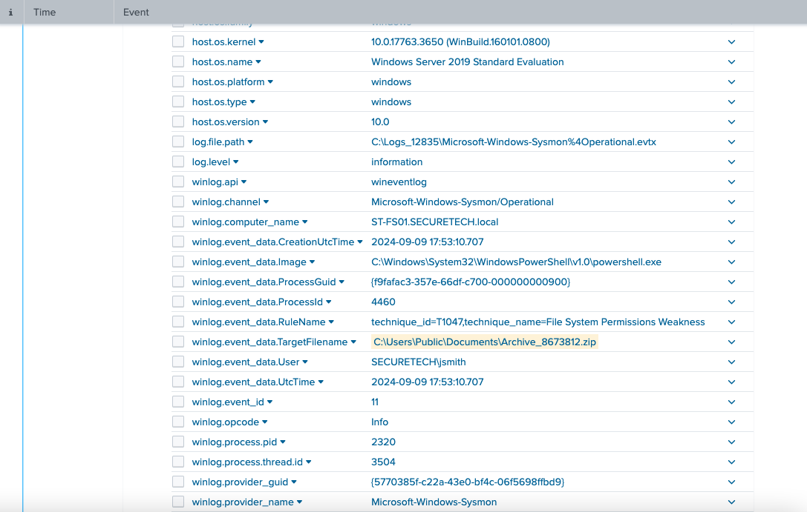